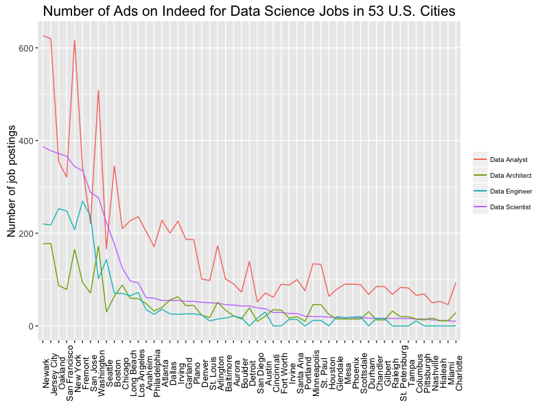
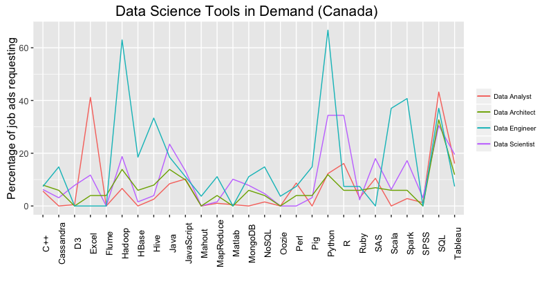
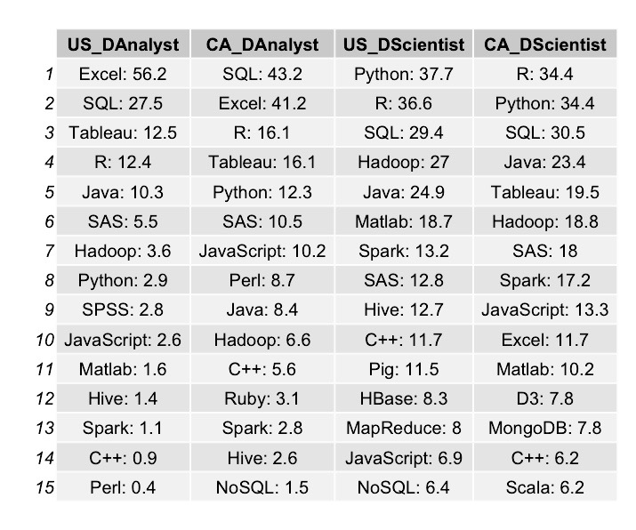
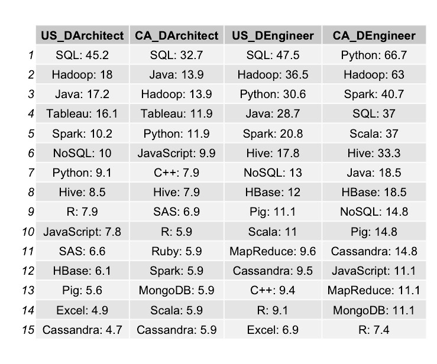

Project Overview
Motivation
As someone who is thinking about going into the field of Data Science and Machine Learning, I have looked through online job ads for data scientists and got overwhelmed by the amount of skills required. It would take a very long time to learn the whole repertoire of data science tools.
To help decide which tools to learn first, I decided to look at which data science skills are currently most in-demand by employers in major cities in Canada and U.S.
After doing some research on this topic, I came across this awesome blog by Jesse Steinweg-Woods published in March 2015. He scraped data off indeed.com and looked at trends for Seattle, Chicago, San Francisco, New York and Nationwide.
His findings from nationwide search suggested that Python is much more in demand than R.This really intrigued me to see if the trend is the same among different data science jobs.
Objectives
In this analysis, I'll be trying to answer the following questions:
- What is the ranking of American cities based on job ads for Data Analysts, Data Scientists, Data Architects & Data Engineers?
- For Data Analysts, Data Scientists, Data Architects & Data Engineers, which analysis tools and programming languages are in highest demand by employers in Canada and U.S.?
Approach
Data was collected from three sources:
- Indeed.com: By web scraping, using a modified version of Jesse's code, I collected data from job ads that had exactly "Data Analyst", "Data Scientist", "Data Architect" or "Data Engineer" in its text for 39 cities in U.S and for Canada nationwide. Then I created a dataframe containing names of data science tools & percent of job ads mentioning each tool.
- Indeed.ca: Same as above
- Stack Overflow kindly gave me permission to use their job ads dataset for "Data Scientists" for this study. The dataset contained information such as job title, company location, job ad description, etc.
Analysis
Ranking of American Cities based on Data Science Job Ads
You can see that almost all 53 cities had the most number of job ads for Data analysts followed by those for Data scientists, except for San Francisco, San Jose and Seattle.
There were similar number of job ads for data engineers and data architects, except for New York, Newark, Jersey City, San Jose, San Francisco, Seattle, Oakland and Fremont where there was a significantly higher number of job ads for data engineers than data architects.
In Newark, Jersey City, New York, Oakland, Washington, Fremont and San Francisco, there were a total of over 1000 job ads for Data Analysts, Data Scientists, Data Architects & Data Engineers combined together. San Jose had over 800 whereas Boston & Seattle had over 500.
Comparing Demand of Data Science Tools: U.S. vs. Canada
For data analysts, Excel seems to be more popular in U.S than Canada by 15%. However, SQL is much more popular in Canada by 15.7%. Most U.S. companies do not seem to be looking for R and Python skills in data analysts, with 12.4% of job ads asking for R and only 2.9% asking for Python! More Canadian companies are looking for data analysts with R and Python skills than U.S., with 16.1% of job ads asking for R and 12.3% for Python.
For data scientists, Python is winning over R in U.S by 1.1% but it is still a tie in Canada. When Jesse did the analysis last year, Python was ahead by about 8% so it seems R has caught up to it again. R language may have benefitted from Microsoft acquisition last year.
For data architects, SQL and Tableau are leading the pack with 45.2% of U.S. job ads asking for SQL, followed by 16.1% for Tableau and 32.7% of Canadian job ads asking for SQL, followed by 11.9% for Tableau.
For data engineers, SQL, Python and Spark are most requested in both U.S. and Canadian indeed job ads. For more information, you can see, below, the list of top 15 data science tools that appeared in the indeed job ads for data analysts, data scientists, data architects and data engineers in U.S. and Canada.
 Comparing Demand of Data Science Tools between U.S. Cities
Now, let’s see if the national trends are different from individual cities’. I will be looking at top 12 cities with the most number of jobs: Newark, Jersey City, New York, Oakland, Washington, Fremont, San Francisco, San Jose, Boston, Seattle, Chicago & Los Angeles.
Looking at the plots above, you can see the following trends:
- For data analysts, SQL and Excel appeared the most in job ads of the top 12 cities, consistent with the national data. R was more popular in Silicon Valley (above 15%) compared to the rest of the cities (below 15%). Tableau is the most popular out of data visualization software.
- For data scientists, Python was ahead of R in 7 out of 12 cities. Still a pretty close competition! SQL & Hadoop are the most in-demand frameworks for databases. Out of the 12 cities, west coast cities are looking for data scientists with java programming skill set more so than east coast cities.
- For data architects, SQL is most in-demand language appearing in about 50% of job ads in all 12 cities. About 28% of job ads in almost all cities asked for Hadoop with the exception of 52.8% in San Jose, which makes sense due to the abundance of silicon valley tech companies with access to big data.
- For data engineers, companies in the top 12 cities seem to be looking for those with a larger skill set compared to data scientists, data analysts and data architects. Over 40% of job ads asked for Hadoop, Python and Java and about 38% for SQL. The companies seem to have started to embrace Spark with over 34% appearing in job ads.
Comparing Demand of Different Tools for Data Scientists Around the World (Stack Overflow Data)
The stackoverflow data had 362 job ads with about 60% of them from U.S. and 40% from countries around the world.
Let’s see if the trends that we observed above for U.S. are similar “internationally”.

For stackover flow job data, R is winning over Python by 3%. Hadoop and SQL were equally in demand for data scientists. It's intesting to see that about 44% of stack overflow job ads for data scientists mentioned machine learning! It seems that it’s becoming important for data scientists to be familiar with machine learning principles and algorithms. Surprisingly, only 24% mentioned Big Data.
Takeaways
So here are my takeaways from this analysis!
When deciding on which programming languages to learn first, you should make the decision based on which career in the “data science universe” you want to pursue.
- Data analysts: SQL, EXCEL and maybe Tableau
- Data scientists: Python, R, SQL & Hadoop
- Data architects: SQL, Java & Hadoop
- Data engineers: Hadoop, Python, Java & SQL
Although Python seems to be gaining momentum over R, they have different strengths, with R being a language developed for statisticians (easier to apply statistical concepts without much experience in programming) vs. Python being a multi-purpose language. So you may want to use both for different purposes.
Overall, companies seem to prefer open source languages such as R and Python over commercial one such as Matlab and SAS. Very good news!
It seems that machine learning will become more and more important for data scientists to be familiar with.
As for the ranking of the cities, east coast cities currently have more data science jobs than west coast. So hooray for the east coasters!
However, please note that Silicon Valley has more jobs for data scientists than for data analysts and more for data engineers than data architects. In contrast, there are more jobs for data analysts than data scientists in east coast. East coast cities also have more jobs for data engineers than data architects but the gap isn’t as wide as in Silicon Valley.